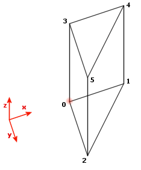

Scripting Custom Brushbuilders
Preliminaries
Prerequisites
- vague knowledge of UnrealScript.
- In particular a passing familiarity with functions, variables and flow control statements and a basic knowledge of the Unreal class structure.
- A little bit of mathematics: geometry, vectors and trigonometry. For more advanced stuff, matrix transformations.
- Compiling With UCC, or UMake
- read up on BrushBuilder, the parent class
(I knew only JavaScript when I started and fumbled my way with the help of tutorials: I recommend [Chimeric]'s excellent site.)
Code style
Bear in mind that streamlined code isn't necessary here. The user won't mind a few extra clock cycles – she's not having rockets fired at her! Aim for code legibility rather than efficiency.
Terms used
- builder brush means the red builder brush, the red dotted-line brush seen in the editor.
- [UT] refers to your base UnrealTournament directory.
- Names such as MyPackage, MyBuilder, etc are used as examples. If you follow this tutorial feel free to use more sensible names.
Caveat
I don't claim to know or understand the inner workings of UnrealEd. Some of what is presented here is based on observation of UnrealEd's behaviour and experimentation.
The maths bit
A simple brush in UEd is basically a polyhedron of some sort, which need not necessarily be convex. Other types of brush are sheet brushes and compound brushes (by that I mean made from intersecting the builder with several simple brushes).
Whatever the brush looks like, UEd stores it in two parts (see also T3D file):
- A list of vertices: these are simply points in 3D space, stored as co-ordinates or vectors, it's the same thing.
- A list of faces: these are the polygons that make the sides of the brush. A poly is described by a list of the vertices that make up its corners.
What this means is that brushes are made by defining some dots, and then joining them up to make shapes. (The dots part is geometry, or vector algebra depending on how you look at it. The shapes part is topology.)
- Order of the vertex list: They must be in sequence, or the poly will show diagonals, and essentially will be 'folded up' — think of making the poly's outline out of a piece of wire, following the order of the vertices. The engine draws the poly inside that wire like a soap bubble.
- Direction: The direction in which the list travels round the poly determines which way the poly will face. More on how this works below.
- Starting vertex: I believe that UEd treats the side formed by the first two vertices in the list as that poly's vertical – this sets the orientation of the poly's texture.
While the brushes may be concave, the individual polys must be convex. The Unreal engine currently has a maximum of 16 vertices per poly, and if you try to make one with more than this UEd will automatically split it.
The Unreal engine uses a left-handed co-ordinate system. This just means that the y-axis goes the opposite way to how it did at school!
Getting started
There are two ways to go about writing a new buidler: you can write a new class, or you can modify an existing one. The demonstration portion of this tutorial will work with either approach.
Making a new class
UnrealEd is designed to be modular. When it loads, it looks for subclasses of object.brushbuilder, and whatever it finds, it displays in the interface. You can see the native builders (and mine, if you've installed the Tarquin Brush Builder pack) in the actor browser if you un-check the 'actor classes only' box.
What this means is that all you need to do is write the class, compile it, and add the package to the list in UnrealTournament.ini — UEd will handle displaying the icon and making the property dialog box.
Make a new directory tree [UT]\MyPackage\Classes. The package name can be anything you like. Create a new text file named MyBuilder.uc in the Classes directory, and paste into it the code below:
// A blank builder class MyBuilder extends BrushBuilder; var() int Sides; var() bool AlignToSide; var() name GroupName; function bool Build() { if( Sides < 3 ) return BadParameters("Bad input."); BeginBrush( false, GroupName ); return EndBrush(); } defaultproperties { Radius=0.000000 Sides=4 AlignToSide=True GroupName=AName BitmapFilename="AFilename" ToolTip="A blank builder." }
Add or change variables as you see fit, duplicating changes in the declaration and the defaultproperties section. The name declared by the class statement must match the filename so change that too if you've renamed the file.
The value of GroupName makes very little difference as far as I can tell, but you may as well put something that describes the builder.
UEd looks in [UT]\system\editorres for a file named AFilename.BMP. If UEd can't find a file of this name, or if the value is blank or the line deleted, UEd simply displays a grey button for the builder in the toolbox. Change this value to the name of a bitmap file in that directory to see an icon in the interface. If you want to make an icon yourself, they are 30 by 30, with a background of 50% grey.
Lastly, change the tooltip to whatever you like.
Compile your package with ucc, and add the following line unrealtournament.ini at the end of the [Editor.EditorEngine] section, after the other 'EditPackages' lines:
EditPackages=MyPackage
Run UEd, and the button for new builder should be in the toolbox. Open the actor browser, uncheck the 'actor classes only' box and look for your builder under object.brushbuilder. Rather than work in a text editor and have to compile to see changes, it's easier to make changes in UEd and see how they work straight away. It's now an existing class, so move on to the next section!
Modifying an existing class
You can modify the script of an existing brush builder, recompile in UEd, use the builder and save your map, and as long as you don't save the package the next time you run UEd the builder you changed will be back to its old self. However, changing, adding or removing input variables to the builder code will upset UEd to the point of crashing!
This approach can be useful if you want to try an idea quickly, or you want to script a complex brush for a specific purpose.
If you've built your own class and are now modifying it within UEd, you should have added all the input variables the builder will need. Keep a text editor running, and paste your updated script into a different file (say MyBuilder.txt) for backup. When you are happy with the changes, quit UEd, open MyBuilder.uc and copy the script across from MyBuilder.txt. Remember that the version pasted from UEd won't have a defaultproperties section, so keep the one from MyBuilder.uc.
It's at this stage you can add or change input variables' names, type and default value.
Rebuild MyPackage.u with ucc (remember you have to delete the original, ucc won't overwrite files), and run UEd to see the new version.
I found the easiest way to script a builder was to edit its script in UEd, recompile from UEd and see the results straight away.
Anatomy of a builder
- Class declaration
- Defines the class name. The class must be a subclass of brushbuilder. See Class Syntax.
- Input parameters
- Variables that the user will set in the parameter dialog box, such as Height, Sides, AlignToSide, IWantFriesWithThis. These are declared as class variables thus:
var() float Height, OuterRadius, InnerRadius; var() int Sides; var() bool AlignToSide;
You can define and use enumeration type variables (out of this tutorial's scope). Variables defined here should be matched in the defaultproperties section, or they will hold peculiar values when first seen in the parameter dialog. See Variable Syntax and Displaying Variables in UnrealEd for details about how different variable types show up in the editor.
- Procedural functions
- Any actions your builder may need to do repeatedly can be called in a function from the build function. For example, the cylinder builder's build function calls a function to build a cylinder, may call it again to build an inner cylinder if the overal brush should be hollow, and then builds polys for the two ends.
- Build function
- This function is called by UEd when you left-click the builder icon, or press 'Build' in the parameter dialog box. Essentially, it's the main body of the builder script.
function bool Build()
Some of the Epic builders use the following, which is identical to UnrealScript:
event bool Build()
- Default properties
- This section goes at the end of the builder script, and contains default values for the input parameters, the tooltip text, and the filename for the icon bitmap.
defaultproperties { [parametername]=[parametervalue] BitmapFilename="[filename]" ToolTip="[tooltiptext]" }
UEd looks in {BaseDirectory?}\System\Editorres for a file named [filename].BMP. If the value is blank, or UEd can't find the file, the button will be grey with no picture.
Functions
The functions are used to build the brush are native functions of the BrushBuilder class that the current builder has inherited.
A little example (ued2)
'Half cube' brush builder

//----------------------------------------------------------- //Half cube //----------------------------------------------------------- class Halfcube extends BrushBuilder; var() name GroupName; var() int Size; event bool build() { BeginBrush( false, GroupName ); //So each time we call the vertex3f function, the created vertex is given a number, //it's the number we use in the poly functions.. //First vertex is number 0, and so on vertex3f(0,0,0); //0 vertex3f(Size,0,0); //1 vertex3f(0,Size,0); //2 poly3i(-1,0,1,2); // the base poly - the first parameter indicates the "front" of the face vertex3f(0,0,Size); //3 vertex3f(Size,0,Size); //4 vertex3f(0,Size,Size); //5 poly3i(1,3,4,5); // the top poly // poly4i(-1,3,0,2,5); // the three sides. poly4i(-1,3,4,1,0); // poly4i(-1,2,1,4,5); // return endbrush(); } DefaultProperties { Size=128 GroupName=Halfcube BitmapFilename="BBHalfCube" ToolTip="half a cube" }
Tips And Tricks
Naming polys
Mychaeel came up with a way to use an expression to set the ItemName parameter in the poly building functions. First declare a name variable in your BrushBuilder subclass; then use SetPropertyText to set it using an arbitarily constructed string value; then take the name value from the variable you declared.
// declare a name variable: var name DynItemName; // set it as needed: SetPropertyText( "DynItemName" , string(i) ); // use the DynItemName variable in the poly call: Poly4i( sgn , Va2 , Vb2 , Vb1 , Va1 , DynItemName , PolyFlags );
Running Unrealscript in the Editor
A brushbuilder is an Object, and is one of the few (very few) classes in which you can run UnrealScript within the editor. The editor calls the Build() function of a brushbuilder to cause it to create a brush. You are not required to use this function to make a brush, however, and can do virtually anything you like with it! Remember that UnrealEd and the actual game run using mostly the same engine - as a result you can essentially treat your brushbuilder as any Object. Basically, anything you can do in the game, you can do with the brushbuilder.
Obtaining actor reference
Generally the first thing you will want to do in the Build script is to find an actor to do your dirty work. Objects can't use Spawn or a myriad of other things. It is quite simple to do so:
// A base class you can extend to call code within the editor. class EditorScript extends BrushBuilder; function actor LocateActor() { local actor I; foreach AllObjects( class'Actor', I ) return I; } event bool Build() { ExecuteScript( LocateActor() ); return false; } function ExecuteScript( actor A ) { // Do whatever you want here, or ideally subclass this to make your own custom functionality. }
Instead of AllObjects iterator, you can use the FindObject(). Use SetPropertyText() and a temp variable if you know name of the actor you're looking for. Don't forget to clear the temp variable after calling SetPropertyText(), leaving actor references in objects most likely will cause crashes on save or exit.
struct SEditorActor { var string Actor; var int MaxId; }; var array<SEditorActor> EditorActors; var Actor TempEditorActor; event bool Build() { local Actor A; // Find actor reference A = FindAnyActor(); if( A == None ) return false; //... } function Actor FindAnyActor() { local SEditorActor E; local Actor A; local int i,j; for( i=0; i!=EditorActors.Length; ++i ) { E = EditorActors[i]; for( j=0; j!=E.MaxId; ++j ) { SetPropertyText("TempEditorActor",E.Actor$j); if( TempEditorActor != None ) { A = TempEditorActor; TempEditorActor = None; Log( "Actor Ref:" @ A, class.name ); return A; } } } BadParameters( "Could not find any actors in the level." ); return None; } DefaultProperties { // MyLevel.LevelInfo0 should exist in every level, empty or not. EditorActors(0)=(Actor="MyLevel.LevelInfo",MaxId=8) EditorActors(1)=(Actor="MyLevel.Camera",MaxId=64) EditorActors(2)=(Actor="MyLevel.Brush",MaxId=128) }
Now that you have an actor, you can call functions from it to do whatever you like. If you have need of more complex functionality, you can create your own actor class, then use the actor class you found using LocateActor() to spawn your own actor, which can then be instructed to do whatever you like. Note that actors spawned in this manner will not have some functions such as tick executed on them in the editor.
User Input
You can accept parameters simply by defining variables like you would in any other Unrealscript. However, you cannot specify a group name.
// These will not show up as parameters, but can still be used within the script. var float Counter; var(Stuff) string Names; // These variables will show up as parameters // UnrealEd will intelligently create the appropriate form of text box/whatever as appropriate for the type of variable. var() int Count; var() array<vector> Offsets;
The default BrushBuilder parameters window is very small and not resizable. Keep the parameters names short so there can be more space for parameter values.
Actor modification notes
Note that changes made by your function or by the indirect consequences of your functions will actually affect actors in the level! If you save the level, those changes will be permanent, and Undo will not work reliably against these changes. Sometimes it will, sometimes it won't, depending on your code. You can still recover things by loading from your last save, however. Save really often, and be extremely careful with calling the destroy function on things.
As a side-note, calling destroy on things also tends to cause General Protection Faults, but it will not always do this. Sometimes it will also refuse to save your level after you have destroyed something through script. I believe that this is due to the lack of the Tick function. As you may know, Destroy() is a special type of latent function and the actor is not actually destroyed until the end of the tick, though it is flagged as bDeleteMe and as a result many operations refuse to touch it, knowing that it has already been declared 'dead.'
Obtaining viewport camera reference
Find viewport reference and camera will be in its Actor variable. To find all viewport names use console command obj list class=viewport
var Viewport TempViewport; function Camera GetCamera() { local Camera C; SetPropertyText("TempViewport","U2Viewport0"); C = Camera(TempViewport.Actor); TempViewport = None; return C; }
UnrealEd 3.0 viewports:
TerrainHeightmap
TerrainLayers
TerrainDecoLayers
MatineeScenes
MatineeActions
MatineeSubActions
U2Viewport0
U2Viewport1
U2Viewport2
U2Viewport3
MeshViewer
AnimationViewer
PrefabBrowser
LIPSinc
StaticMeshBrowser
TextureBrowser
TextureBrowserUsed
TextureBrowserMRUBrushBuilder object persistence
BrushBuilders are destroyed and created when new level is loaded. When UnrealEd starts up there may be more that one copy of each BrushBuilder.
Comments
Foxpaw: I refactored the bit about brushbuilders being used for custom editor functions, and I added what I've learned about them, but I think this topic deserves it's own page. It is technically a custom brushbuilder, but I don't think that people will find it here. I already had the idea and decided to read up about the brushbuilder stuff to see if anyone else had tried it, but otherwise I doubt a person looking to run unrealscript in the editor would look here for the answer.
Switch: Keeping this in one place is so far ok. The page is linked on UnrealScript.
Dushnok: I'm very newbish at uscript but I added the little example (halfcube) . Just for newbies like me  Do you think it's ok ?
Do you think it's ok ?
EntropicLqd: Nice example. I'd be inclined to define all the points first and then the polygons afterwards. Question though - The first parameter indicates the "front" of the face by specifying the direction the vertices should be traversed. Presumably the sign is reversed if the vertices are specified in reverse order. e.g. The following are equivalent:
poly3i(-1,0,1,2); poly3i(1,2,1,0);
Is there a "best way" to specify the order of the vertices?
Tarquin: the vector made by the first two vertices appears to give the orientation of the texture, but I've not managed to pin this down exactly.
OlympusMons: Changed category to refactor me.
Refactor Me – Badly needs a more "user-friendly" format, with some pictures.